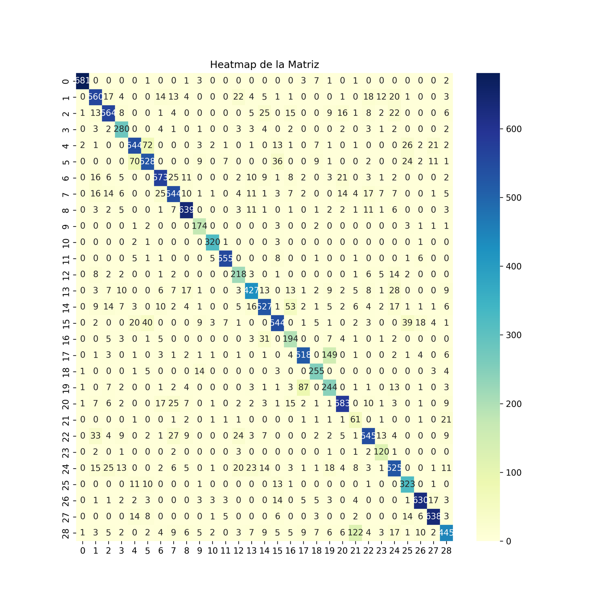
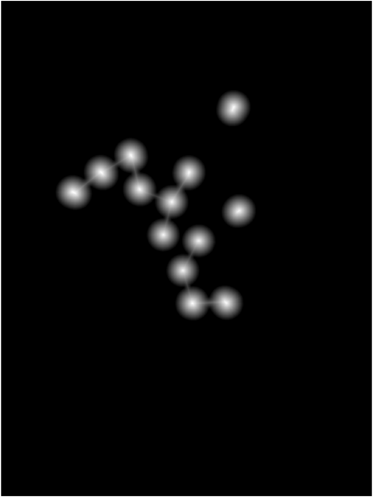
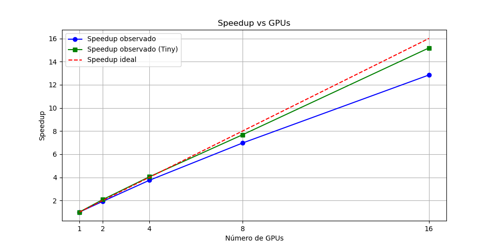
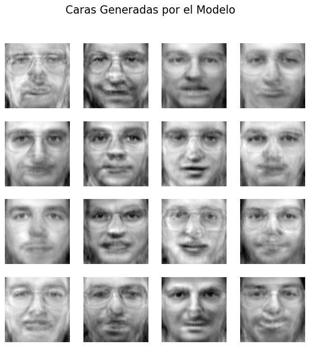

Lluc
LlucFour years of AI,
tile by tile.
The BSc in Artificial Intelligence at UPC Barcelona — one of Spain's first dedicated AI degrees — plus an exchange semester at UC Chile. This isn't a second project list: it's the map of what I learned. Tap the highlighted tiles to see what each course left me with.
Introduction to Robotics
Kinematics, Jacobians and Kalman filtering in MATLAB — and a final project that actually drives: a wall-following TurtleBot in ROS/C++, fusing LiDAR and odometry into a 10 Hz reactive control loop.
Systems Modeling & Simulation
Discrete-event simulation: modeled a supermarket in FlexSim, found the queue bottlenecks and proposed a layout backed by data; validated random-number generators with chi-squared tests in R.
Parallelism & Distributed Systems
C on the UPC cluster: profiled K-means, found the 98% hotspot, parallelized it with OpenMP for a 12.9× speedup on 20 threads — with the Amdahl's-law analysis of why it plateaus. Also SIMD intrinsics and a data-parallel MLP trainer.
Statistical Modeling
A full R pipeline on a Steam-games dataset: PCA, Gower-distance clustering with per-cluster profiling, and a GLM with stepwise selection predicting review positivity. Statistics as a craft, not a formula sheet.
Introduction to Machine Learning
The classic toolbox — regression, classification, clustering, boosting — capped by a solo project predicting cirrhosis patient survival: leakage-safe preprocessing, SMOTENC balancing, a fairness-motivated feature removal, and a formal Google-style model card. My first taste of responsible AI done properly.
Basic Algorithms for AI
Classic AI that still earns its keep: optimized Barcelona's Bicing bike redistribution with hill climbing and simulated annealing, and built a PDDL planner that schedules a year of reading under page budgets — its plans animated in PyGame.
Natural Language Processing
NLP from first principles: a six-language identifier built on character trigrams with Lidstone smoothing — 99.66% sentence accuracy, no ML library for the model. Plus sentiment classification and CRF-based POS/NER tagging for Spanish and Dutch.
Neural Networks & Deep Learning
A CNN designed from scratch — no transfer learning allowed — classifying 29 museum-art mediums (MAMe benchmark). Six documented ablation rounds on a SLURM GPU cluster took it from 44% to 81.5% test accuracy. The discipline mattered more than the number.

Computer Vision
Both ends of the spectrum: fine-tuned YOLOv8 on an indoor-objects dataset I converted myself (91.4% precision, 77.9% mAP@50, honest held-out validation) — and counted pharmacy pills with zero training: morphology, distance transform, watershed. Classical vision still wins when the problem is geometric.

Speech & Dialogue Processing
Built "Lara", a rule-based housing-search chatbot with a Flask front-end, then competed on 31-class spoken-command recognition (65,000 audio clips) with CNN and RNN classifiers over spectrograms. Also presented the TokenFormer paper.
High-Performance Computing for AI
Hands-on with MareNostrum 5, the national supercomputer: SLURM, Singularity containers, a Hadoop cluster inside them, Spark — and the capstone: scaling Vision Transformer training with PyTorch DDP from 217 to 3,294 img/s. 15.18× speedup on 16 GPUs, and a clean lesson in why small models stop scaling first.

Reinforcement & Unsupervised Learning
The deep-RL stack implemented from the papers — DQN on Atari Pong from pixels, then DDPG and TD3 for continuous-control LunarLander, trained on the BSC cluster. The generative block built RealNVP normalizing flows (these faces are sampled from mine) and VAEs by hand.

Knowledge-Based Systems
A CLIPS expert system with a Protégé ontology, then a full Case-Based Reasoning recommender over ~20,800 MoMA artworks: retrieve similar visitors, adapt their museum routes, present in a Streamlit wizard, retain rated visits. One of the few course projects with a public repo you can run.
🇨🇱 UC Chile, Santiago
A semester at the Pontificia Universidad Católica de Chile — one of Latin America's most prestigious universities — mixing hard engineering courses with things UPC doesn't teach.
Massive Data Processing
Built and benchmarked four RAG retrievers over 127,487 embedded interventions from Chile's legislative sessions: dense HNSW search, sparse BM25, GraphRAG over typed graph patterns, and hybrid RRF+MMR — on MillenniumDB, with LLM generation and a manual relevance evaluation. Sparse won. Knowing why is the point.
Image Processing
Final project in medical imaging: automatic quantification of T1/T2 relaxation maps in whole-heart 3D cardiac MRI — auto-reformat to short-axis via PCA, myocardium segmentation, per-region AHA bullseye maps, and mask erosion for partial-volume robustness. Classical image processing only, no ML allowed.
Marketing Analytics
The quantitative side of marketing, in R: segmentation and factor analysis, logit brand-choice models, Bass diffusion forecasting, conjoint analysis — and text analytics on Airbnb Miami reviews. Useful glasses for anyone building products.
Technology & Entrepreneurship
Human-centered design capstone: we prototyped LactoTrace, a QR-based traceability app for the new Human Milk Bank at Hospital UC CHRISTUS — lot labels, donor codes, expiry and storage tracking, scan-to-trace. Health-tech with real stakeholders.